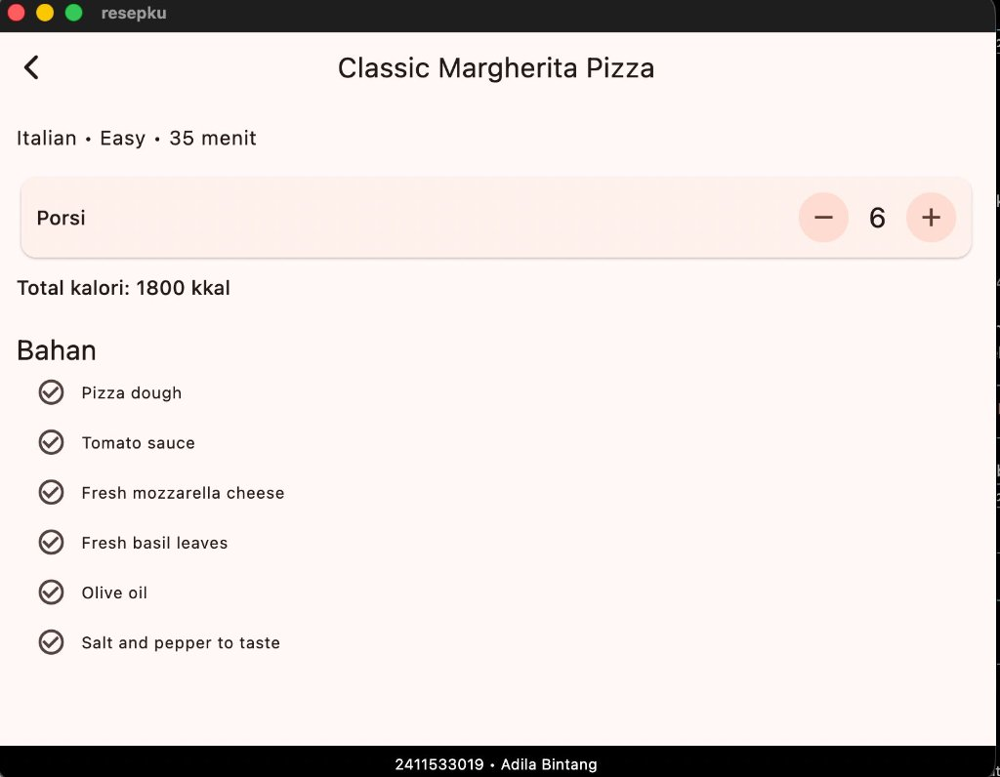
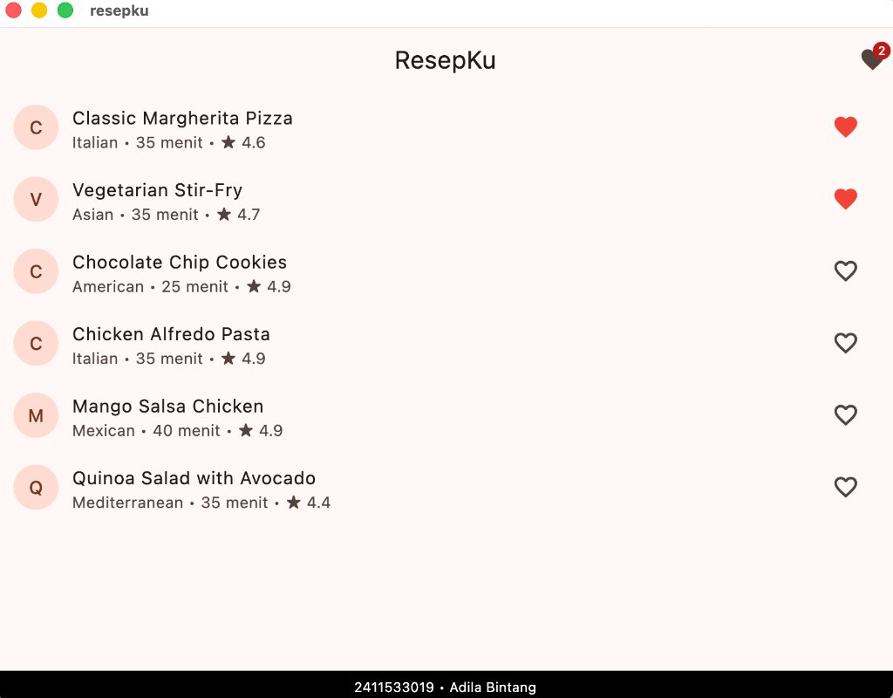
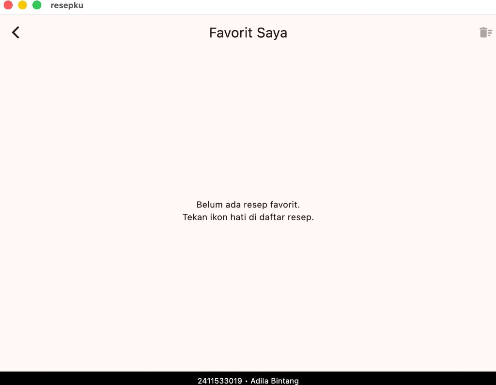
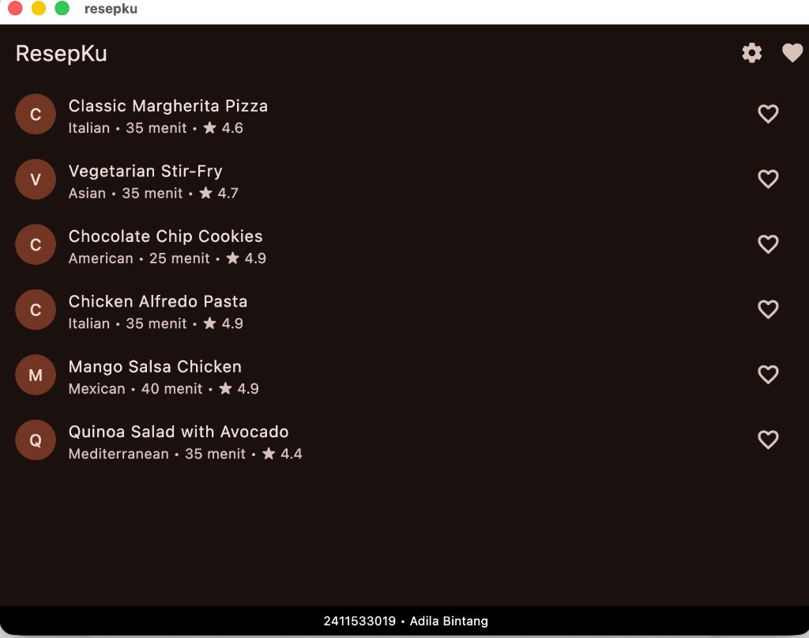

MODUL VI: State Management pada Aplikasi ResepKu (setState() dan Provider)
NIM: 2411533019 • Adila Bintang • Kelas: Praktikum Aplikasi Mobile
| Mata Kuliah | Praktikum Aplikasi Mobile (DIF61145) — 1 SKS, Semester V |
|---|---|
| Modul Praktikum | Modul 6 – State Management: setState() dan Provider |
| Mata Kuliah Teori | Aplikasi Mobile (DIF61144) • Pertemuan 9 (LKM-09) |
| Nama Mahasiswa | Adila Bintang |
| NIM | 2411533019 |
| Dosen Pengampu | Arifan Rahman, M.Kom. (arifanrahman@it.unand.ac.id) |
| Program Studi / Fakultas | Departemen Informatika — Fakultas Teknologi Informasi, Universitas Andalas |
Pada aplikasi mobile modern, antarmuka pengguna bersifat reaktif terhadap perubahan data internal maupun interaksi pengguna yang dinyatakan dengan formula fundamental UI = f(state). State adalah data yang dapat berubah selama siklus hidup aplikasi dan secara langsung menentukan bagaimana antarmuka ditampilkan ke layar.
Dalam modul praktikum ini, dibangun aplikasi ResepKu yang menjadi fondasi berkelanjutan hingga Modul 10. Praktikum ini bertujuan untuk mengeksplorasi dua spektrum manajemen state pada Flutter:
setState()): State lokal yang hanya dibutuhkan secara spesifik oleh satu widget atau satu halaman saja (contoh: kalkulasi porsi dan kalori pada halaman detail).Provider): State global yang perlu diakses dan dibagikan (shared) oleh banyak widget dan halaman yang tidak berada dalam hierarki hierarkis langsung (contoh: daftar resep favorit, badge counter di AppBar, serta tema aplikasi).| Aspek | setState() | Provider |
|---|---|---|
| Peruntukan | State lokal (ephemeral), dipakai oleh satu widget. | App state, dipakai bersama oleh banyak widget dan halaman. |
| Contoh di ResepKu | Jumlah porsi dan total kalori di halaman detail. | Daftar resep favorit, badge counter, tema gelap/terang. |
| Tempat Penyimpanan Data | Field di dalam class State<T>. |
Class model yang meng-extend ChangeNotifier. |
| Notifikasi Pembaruan UI | Memanggil fungsi setState(() { ... }). |
Memanggil method notifyListeners(). |
| Cara Membaca Data | Akses langsung variabel field di method build(). |
context.watch<T>() di build(), context.read<T>() di callback, atau widget Consumer<T>. |
Proyek resepku dirancang secara modular dengan pemisahan tanggung jawab (separation of concerns) ke dalam direktori spesifik di dalam lib/:
lib/
├── main.dart # Titik masuk utama & konfigurasi MultiProvider
├── models/
│ └── recipe.dart # Data model resep dan getter totalTimeMinutes
├── data/
│ └── dummy_recipes.dart # Kumpulan data resep dummy (ID 1-6 dari DummyJSON)
├── providers/
│ ├── favorite_provider.dart # ChangeNotifier untuk state favorit aplikasi
│ └── theme_provider.dart # ChangeNotifier untuk pengaturan tema gelap/terang (Latihan 1)
├── pages/
│ ├── home_page.dart # Layar utama katalog daftar resep
│ ├── detail_page.dart # Layar detail resep (gabungan setState & Provider)
│ ├── favorite_page.dart # Layar daftar resep favorit & fitur hapus semua (Latihan 2)
│ └── settings_page.dart # Layar pengaturan tema (Latihan 1)
└── widgets/
├── identity_footer.dart # Footer identitas wajib (NIM & Nama) di semua halaman
├── recipe_tile.dart # Tile resep responsif terhadap status favorit
└── favorite_badge_button.dart # Tombol AppBar ber-badge Material 3 reaktif
Pada langkah awal (Bagian A), fitur pengaturan porsi resep diimplementasikan di DetailPage menggunakan StatefulWidget. Jumlah porsi disimpan di variabel privat int _servings. Saat pengguna menekan tombol penambah (+) atau pengurang (-), perubahan dibungkus dengan setState() untuk memicu kalkulasi ulang totalCalories = recipe.caloriesPerServing * _servings serta merender ulang tampilan secara dinamis.

Gambar 4.1: Halaman Detail Classic Margherita Pizza dengan Porsi bernilai 6 dan Total Kalori 1800 kkal (6 × 300 kkal), lengkap dengan footer identitas 2411533019 • Adila Bintang.
- tidak aktif ketika porsi bernilai 1. Tunjukkan baris kode yang menyebabkan hal tersebut dan jelaskan mekanismenya!
Potongan Kode (lib/pages/detail_page.dart):
IconButton.filledTonal(
onPressed: _servings > 1 ? _removeServing : null,
icon: const Icon(Icons.remove),
)Penjelasan Analisis:
Pada Flutter, properti onPressed pada komponen tombol (seperti IconButton, ElevatedButton) mengontrol interaktivitas widget tersebut. Kode di atas memanfaatkan ekspresi ternary _servings > 1 ? _removeServing : null. Ketika nilai _servings berada di angka 1, kondisi _servings > 1 bernilai false sehingga nilai null diteruskan ke onPressed. Berdasarkan konvensi framework Flutter, memberikan nilai null pada callback interaksi secara otomatis menonaktifkan tombol (disabled state), mengubah warna tombol menjadi redup, dan mencegah pengguna mengurangi porsi hingga bernilai nol atau negatif.
Pada Bagian B dilakukan eksperimen menyimpan status favorit secara lokal di dalam widget RecipeTile menggunakan bool _isFavorite = false dan setState(). Berdasarkan pengamatan eksperimen, berikut adalah jawaban atas pertanyaan evaluasi:
Jawaban: Ya, ikon hati berhasil berubah bentuk dan warnanya (dari Icons.favorite_border abu-abu menjadi Icons.favorite merah) saat ditekan. Hal ini terjadi karena variabel _isFavorite tersimpan langsung sebagai field di dalam kelas _RecipeTileState. Pemanggilan setState(() => _isFavorite = !_isFavorite) memberitahu framework Flutter bahwa state internal tile tersebut telah berubah, memicu eksekusi ulang method build() pada instance tile bersangkutan dan menampilkan ikon baru.
Jawaban: Hal tersebut tidak dapat dilakukan secara langsung. Variabel _isFavorite terisolasi di dalam kelas _RecipeTileState yang posisinya berada di bawah (child widget) pada pohon hierarki widget. Di Flutter, aliran data bersifat unidirectional (turun ke bawah). HomePage sebagai parent widget tidak memiliki referensi maupun hak akses untuk membaca state internal privat yang terperangkap di dalam masing-masing instance child-nya.
Jawaban: Halaman detail (DetailPage) sama sekali tidak dapat mengetahui status favorit resep tersebut. Ketika berpindah halaman menggunakan Navigator.push(), halaman detail di-push sebagai rute baru yang independen di atas navigator tree. Karena state favorit hanya hidup di memori instance _RecipeTileState dan tidak dibagikan (shared) ke rute lain, maka halaman detail tidak memiliki sarana untuk membaca status tersebut.
Package provider dipasang melalui perintah flutter pub add provider. Dibuat kelas FavoriteProvider yang meng-extend ChangeNotifier:
import 'package:flutter/foundation.dart';
import 'package:resepku/models/recipe.dart';
class FavoriteProvider extends ChangeNotifier {
final List<Recipe> _items = [];
List<Recipe> get items => List.unmodifiable(_items);
int get count => _items.length;
bool isFavorite(Recipe recipe) => _items.any((r) => r.id == recipe.id);
void toggle(Recipe recipe) {
if (isFavorite(recipe)) {
_items.removeWhere((r) => r.id == recipe.id);
} else {
_items.add(recipe);
}
notifyListeners(); // Memberi tahu seluruh widget listener untuk rebuild
}
void clear() {
_items.clear();
notifyListeners();
}
}Berdasarkan pengujian keenam skenario yang tercantum pada panduan modul, seluruh fungsionalitas berjalan dengan hasil valid dan konsisten:
| No | Skenario Pengujian | Hasil yang Diharapkan | Sesuai? |
|---|---|---|---|
| 1 | Tap ikon hati pada Margherita dan Alfredo di Home | Ikon berwarna merah, badge menunjukkan angka 2 | ✓ |
| 2 | Buka detail Margherita | Ikon hati di AppBar terisi (aktif) | ✓ |
| 3 | Di halaman detail, tap ikon hati, lalu kembali ke Home | Ikon Margherita kosong, badge menunjukkan angka 1 | ✓ |
| 4 | Tap badge di AppBar | Halaman Favorit hanya berisi Alfredo | ✓ |
| 5 | Hapus Alfredo dari halaman Favorit, lalu kembali | Muncul pesan "Belum ada resep favorit", badge hilang | ✓ |
| 6 | Ubah porsi menjadi 2, kembali ke Home, lalu buka lagi resep yang sama | Porsi kembali ke nilai awal, karena state lokal ikut dibuang ketika halaman ditutup | ✓ |
1. HomePage dengan Badge Favorit Bernilai 2

Menampilkan daftar resep di mana Margherita & Stir-Fry difavoritkan, badge di AppBar bernilai 2.
2. FavoritePage saat Daftar Favorit Kosong

Menampilkan halaman Favorit Saya dengan teks informasi dan tombol hapus semua dalam kondisi disabled.
State lokal (setState()) pada RecipeTile hanya mampu mengelola dan memperbarui tampilan internal dari widget bersangkutan. Data favorit terisolasi di dalam kelas state lokal sehingga HomePage tidak dapat menghitung total item untuk badge AppBar, dan DetailPage tidak dapat mendeteksi status favorit resep. Hal ini membuktikan bahwa state lokal tidak dapat digunakan untuk mengelola data yang perlu dibagikan (*shared data*) antar-widget atau antar-rute navigasi yang berdiri sendiri.
Jumlah porsi resep tetap dipertahankan menggunakan state lokal setState() karena data porsi bersifat ephemeral (sementara) dan ruang lingkup kebutuhannya terbatas hanya pada halaman detail resep yang sedang aktif dibuka. Berdasarkan pengujian pada Skenario 6, ketika pengguna meninggalkan rute DetailPage dan membukanya kembali, nilai porsi kembali ke nilai default bawaan data resep karena objek State tersebut ikut dimusnahkan (disposed) dari memori saat halaman ditutup. Menyimpan porsi ke dalam Provider global tidak disarankan karena akan membebani memori dengan data yang tidak dibutuhkan oleh halaman lain seperti HomePage atau FavoritePage.
Jika ChangeNotifierProvider dipindahkan dari fungsi main() ke dalam pohon widget HomePage (misalnya membungkus Scaffold di HomePage), maka ketika pengguna menavigasi ke FavoritePage melalui Navigator.push(), aplikasi akan mengalami crash fatal dengan pesan error ProviderNotFoundException. Hal ini terjadi karena rute baru yang dibuka via Navigator.push() ditempatkan di tingkat root di atas MaterialApp, sehingga posisi FavoritePage berada sejajar atau di luar cabang sub-pohon HomePage. Akibatnya, saat FavoritePage mencari instance FavoriteProvider ke atas hierarki pohon widget (ancestor lookup), provider tersebut tidak ditemukan.
Menambahkan kemampuan aplikasi untuk beralih antara mode terang dan mode gelap secara global melalui halaman Pengaturan (SettingsPage).
a. Kode Provider Tema (lib/providers/theme_provider.dart):
import 'package:flutter/material.dart';
class ThemeProvider extends ChangeNotifier {
ThemeMode _themeMode = ThemeMode.light;
ThemeMode get themeMode => _themeMode;
bool get isDarkMode => _themeMode == ThemeMode.dark;
void toggleTheme(bool isDark) {
_themeMode = isDark ? ThemeMode.dark : ThemeMode.light;
notifyListeners();
}
}b. Registrasi MultiProvider & Konfigurasi MaterialApp (lib/main.dart):
void main() {
runApp(
MultiProvider(
providers: [
ChangeNotifierProvider(create: (context) => FavoriteProvider()),
ChangeNotifierProvider(create: (context) => ThemeProvider()),
],
child: const ResepKuApp(),
),
);
}
class ResepKuApp extends StatelessWidget {
const ResepKuApp({super.key});
@override
Widget build(BuildContext context) {
return MaterialApp(
title: 'ResepKu',
debugShowCheckedModeBanner: false,
theme: ThemeData(colorSchemeSeed: Colors.deepOrange),
darkTheme: ThemeData(
colorSchemeSeed: Colors.deepOrange,
brightness: Brightness.dark,
),
themeMode: context.watch<ThemeProvider>().themeMode,
builder: (context, child) => IdentityFooter(child: child!),
home: const HomePage(),
);
}
}c. Halaman Pengaturan (lib/pages/settings_page.dart):
import 'package:flutter/material.dart';
import 'package:provider/provider.dart';
import 'package:resepku/providers/theme_provider.dart';
class SettingsPage extends StatelessWidget {
const SettingsPage({super.key});
@override
Widget build(BuildContext context) {
final themeProvider = context.watch<ThemeProvider>();
return Scaffold(
appBar: AppBar(title: const Text('Pengaturan')),
body: ListView(
children: [
SwitchListTile(
title: const Text('Mode Gelap'),
value: themeProvider.isDarkMode,
onChanged: (val) {
context.read<ThemeProvider>().toggleTheme(val);
},
),
],
),
);
}
}
Gambar 8.1: Antarmuka Halaman Utama ResepKu saat Mode Gelap aktif (lengkap dengan ikon Pengaturan di AppBar dan footer identitas 2411533019 • Adila Bintang).
Pada halaman FavoritePage, ditambahkan aksi pada AppBar berupa tombol Icons.delete_sweep untuk menghapus semua item favorit sekaligus. Tombol ini memiliki dialog konfirmasi (AlertDialog) sebelum aksi eksekusi pembersihan dilakukan, serta dinonaktifkan secara otomatis (disabled) ketika daftar favorit kosong.
Implementasi AppBar FavoritePage (lib/pages/favorite_page.dart):
AppBar(
title: const Text('Favorit Saya'),
actions: [
Consumer<FavoriteProvider>(
builder: (context, favorite, child) {
return IconButton(
tooltip: 'Hapus Semua Favorit',
icon: const Icon(Icons.delete_sweep),
onPressed: favorite.count == 0
? null
: () {
showDialog(
context: context,
builder: (ctx) => AlertDialog(
title: const Text('Hapus Semua Favorit'),
content: const Text(
'Apakah Anda yakin ingin menghapus semua resep dari favorit?',
),
actions: [
TextButton(
onPressed: () => Navigator.pop(ctx),
child: const Text('Batal'),
),
TextButton(
onPressed: () {
context.read<FavoriteProvider>().clear();
Navigator.pop(ctx);
},
child: const Text('Hapus'),
),
],
),
);
},
);
},
),
],
)Gambar 8.2: Tampilan Halaman Favorit Saya saat tidak ada resep favorit. Tombol delete_sweep di kanan atas dalam keadaan nonaktif (disabled) karena favorite.count == 0.
setState()) sangat ideal dan efisien digunakan untuk mengelola data sementara (ephemeral state) yang hanya relevan pada satu widget atau rute aktif, seperti fitur penyesuaian porsi dan kalori pada halaman detail.
Provider) merupakan solusi andal untuk menyelesaikan masalah prop drilling dan data terisolasi. Dengan mengabstraksikan state ke dalam kelas turunan ChangeNotifier dan menyediakannya di pucuk hierarki widget melalui MultiProvider, state dapat dibagikan secara konsisten ke seluruh rute (daftar resep, badge AppBar, detail resep, dan halaman favorit).
context.watch() di dalam build() untuk mendengarkan perubahan, context.read() pada callback event interaktif, dan widget Consumer untuk optimasi selective rebuilding—menghasilkan aplikasi Flutter yang bersih, reaktif, dan berperforma tinggi.